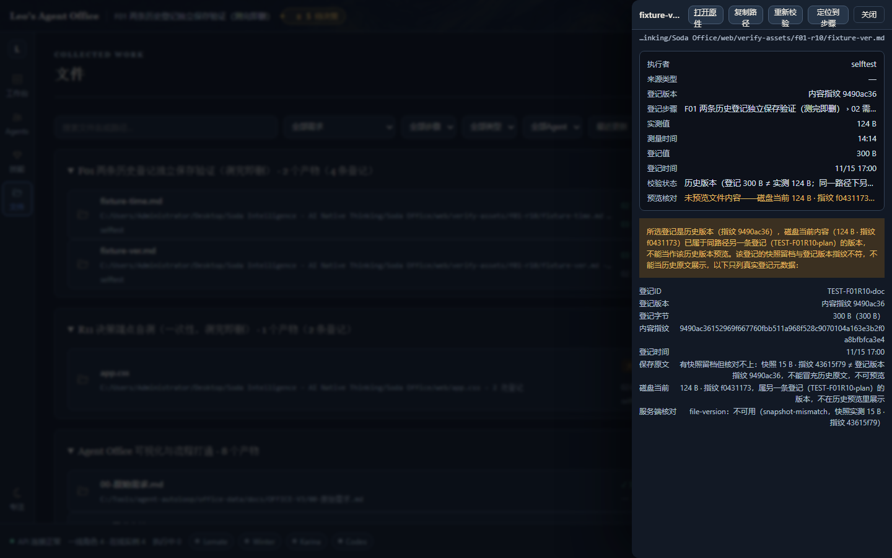
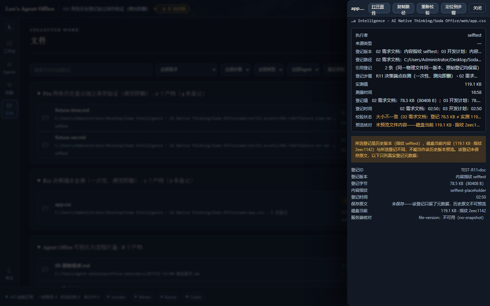
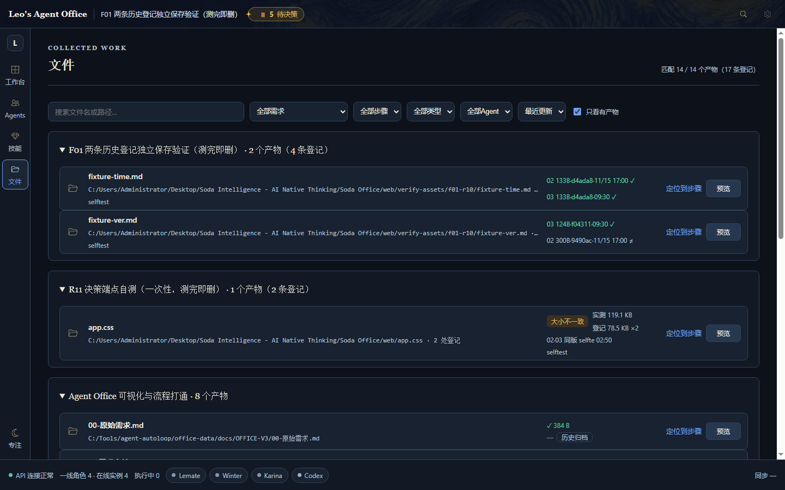

| # | 文件 | 位置 | 修改 |
|---|---|---|---|
| 1 | web/app.js | openFileView 历史分支门（~2398 行） | 去掉 && diskMatchesOtherReg(...) 附加条件：磁盘现状与所选登记指纹不同（gate=hist）一律走历史预览分支。堵死「磁盘谁的版本都不匹配→照样展示当前文件」的冒充洞（TEST-R11 app.css 即此案例） |
| 2 | web/app.js | fvHistPreview() 候选段（~2202 行） | 历史原文改为服务端优先：请求 /api/office/file-version?path+taskId+stepKey+vkey，服务端 node crypto 实测候选（登记原文+最近快照）与登记指纹核对；回文本后页内 WebCrypto 再算 SHA-256 双重核对，两端一致才上屏；端点失败回退页内候选核对（第 2 轮逻辑保留） |
| 3 | web/app.js | fvHistPreview() 不可用态元数据（~2253 行） | 新增「服务端核对」行：明示端点不可用结论与服务端实测的候选字节/指纹（如 snapshot-mismatch，快照实测 15 B · 指纹 43615f79） |
| 4 | web/server.js | 新端点 GET /api/office/file-version（~946 行） | 服务端文件读取逻辑：path+taskId+stepKey 共同定位登记，vkey 二次确认（不符 → HTTP 409）；服务端实测磁盘与候选的字节+SHA-256；一致 → 回磁盘/快照文本（2MB 上限），否则 available:false + reason（snapshot-mismatch / no-snapshot）+ 只回数值不回内容。BUILD_VERSION r11c→r11d |
| 5 | web/app.css | #fv-body .fv-hint（1830 行） | 补上第 2 轮漏掉的 background:#3B3021。第 2 轮只测了字号/行高/字色/内边距没测背景，本轮实测抓出 computed background 为透明，按任务规格补上并复测通过。实际效果：历史版本提示条（12px/18px/#E5B95E 字/#3B3021 底） |
备份：web/app.js.bak-f02r3（219047 B）、web/server.js.bak-f02r3（74103 B）。node --check 两个 JS 均通过。app.css 为单属性新增，回滚点=精确 diff（见第三节第 4 条）。
| 登记 | 端点结论 | 实测值 |
|---|---|---|
| TEST-F01R10›doc›fixture-ver.md（300B 历史） | 不可用 snapshot-mismatch | 快照实测 15 B / 43615f79 ≠ 登记 300 B / 9490ac36（SHA-256+字节双比对）；磁盘 124 B/f0431173 只回数值不回内容（text 字段 undefined） |
| TEST-F01R10›plan›fixture-ver.md（124B 当前） | 可用 disk-current | 124 B / f0431173 |
| TEST-F01R10›doc›fixture-time.md（133B） | 可用 disk-current | 133 B / d4ada83b |
| TEST-F01R10›plan›fixture-time.md（133B） | 可用 disk-current | 133 B / d4ada83b |
| vkey 双确认：拿 plan 指纹问 doc 登记 | HTTP 409 vkey-mismatch | — |
| 登记不存在（TEST-F01R10›doc 问 app.css） | HTTP 404 reg-not-found | — |
| TEST-R11›app.css（登记 80408B，磁盘漂移） | 不可用 no-snapshot | 磁盘实测 121944 B / 2eec1142（探针实测自取）；candidates=[] 无快照留档 |
TEST-F01R10›doc · sha:9490ac36…（登记ID+版本指纹双绑定）；data-fv-hint="hist"、无 <pre>；正文不含「当前版本 V2」（不冒充磁盘）、不含「旧版快照」（不冒充快照）


PASS × 63（A1–A12 · B1–B11 · C1–C5 · D1–D2b · E1–E4 · F1–F10 · 刷新×3×3 · G1–G2 · H1–H4 · 终态×3） 总计: 63 PASS / 0 FAIL 证据：f02r3-verify.mjs / f02r3-verify.out / f02r3-*.png（仓库根目录）